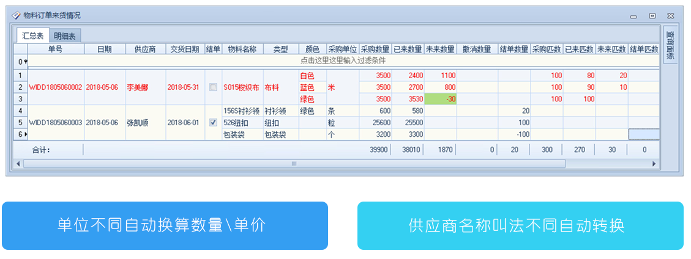
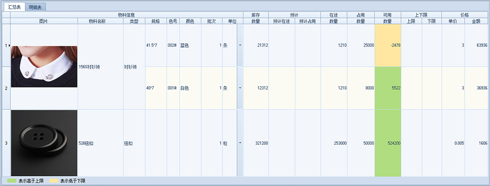
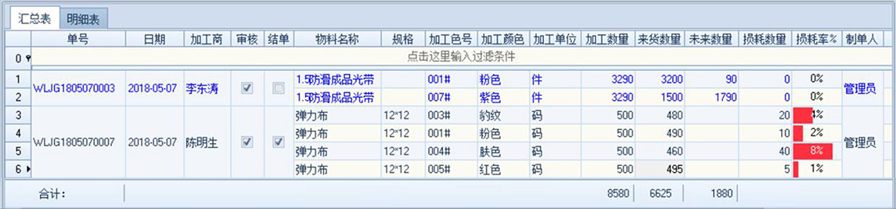
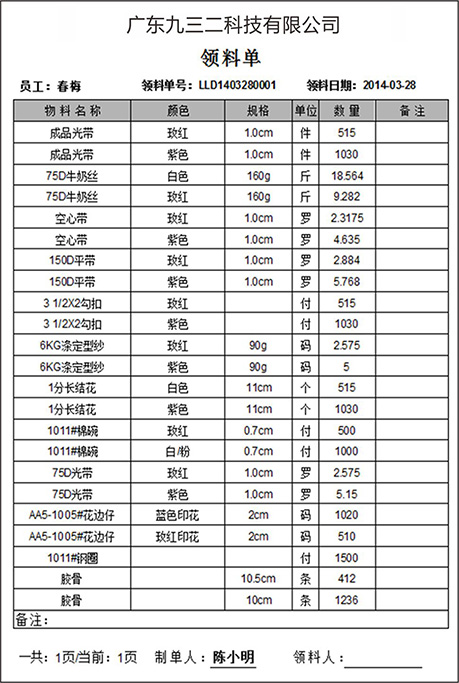
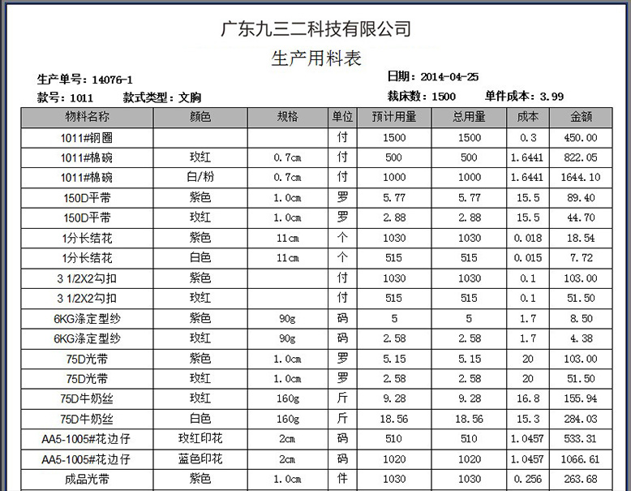
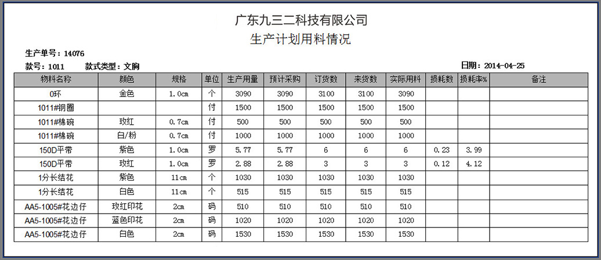

物料采购
轻松跟进每张采购订单：订了什么物料、来了多少、还差多少没回来、货期提前预警等。
物料库存
一张表体现各物料的所有情况：库存、预计在途、预计占用、在途、占用、可用、上限、下限。
物料加工
每个物料需要加工多少、来了多少、还差多少没回来、损耗了多少、是否超出货期等。
快速领料
仓库人员按单发料，可跟进需要多少物料、发了多少、还差多少没发、实际比预计多发了多少、一键打印领料单。
自动计算成本
采用移动加权平均算法，每次物料采购的价格不同，也会自动计算。也可以按批次管理，不同批次不同成本价。
生产计划物料情况
清晰每张生产计划单、每个款的生产用料、采购数、来货数、领用数、损耗数、损耗率等
